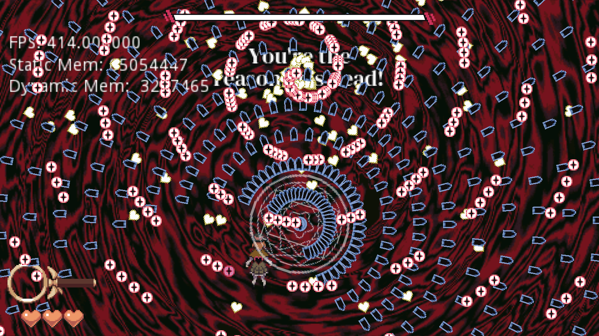

Overview
Blast away deductions and solve the magical mystery in this danmaku-detective game!
Originally made in a team of 6 over about 4 months, I later spent about 5 months recreating the game in a new engine. I designed many systems for the game and making systems that could be used again informed my decisions on their design.
Choosing the Right Engine
The original version of the game was created using RPG Maker MV with the intention of pushing the engine to its limits, and the difficulties I observed with this version informed decisions about what engine to port the game to. Out of all the major engines right now, I needed something that excelled at 2d and had custom editor support. As a result Godot Engine was a clear choice. I believe in choosing the right tool for the job and this change will support development of other games long term.
Dialogue System
I created a visual novel style dialogue system, which includes character portraits with multiple expressions and support for an expandable amount of other actions. The system is split into the data representation, the display components, and the editor.
Data
The dialogue is contained in the high level structure of a Dialogue Sequence, which contains a list of all events that occur in order. In other words, it says what should happen in the scene. Each event is an object within this list, and it may also contain subsequences. Standard events include directions for characters to speak, and also several events for sequence logic.
tool
extends DialogEvent
class_name SpeakEvent
export (Resource) var character #The DialogCharacter resource of the speaker
export (int) var displayName = 0 #ID of the shown character nickname
export (String, MULTILINE) var text:String = "" #Line of text, used as key into string table
export (bool) var showTalking = true #Whether the character should be shown speaking the line
The resource script defining a line of dialogue.
Display
The display system is set up to take a dialogue sequence as input and play it. It’s made of multiple individual components under the main logic component that each handle their own type of task. There are eight components in all including the Textbox, Portraits, and SignalCues components.
The main logic component handles the sequencing. It starts each event in order, adding them to a set of active events until it receives the ‘handled’ callback from all subcomponents. This allows multiple events to process at once, say for example two characters appearing on screen simultaneously.
The SignalCues component is of particular interest as this component can cover for any actions that existing events do not support, such as one-off occurrences. This takes advantage of the signal system in Godot, using a signal bus through the dialogue system interface. The signal broadcasts an event identifier and any node is allowed to do something in response. What makes this even more useful is that this can be received by the Godot AnimationPlayer node as the name of an animation to play. Since the animator can do many things including function calls, this alone makes the entire system able to do just about anything in the game pretty easily.
Dialogue History
The player may forget or miss dialogue, so we have a history log the player may reference at any time. Though stored in a simple data structure we need to save it to a small binary format to minimize disk space usage. Originally I saved the file as a JSON string, which had the benefit of being easy, but was creating larger than ideal files with low amounts of data. My solution was to create a binary data format to store the history data.
I based the format on bits of information I knew about image formats. The file format has a byte stream structure. The first byte is an id number for the type of event. 256 values is unlikely to ever be exceeded, but it could be expanded by using an extra byte if the value is set to certain special values. The next bits will depend on the type of event. A speak event for example has two bytes for the character id and nickname id, then the string id defining the line of text is saved as a null terminated string. The next event can then be encoded immediately after in the byte sequence.
#Takes a dictionary containing the event data and encodes relevant data into a byte sequence.
func serializeSpeakEvent(data:Dictionary)->PoolByteArray:
#Format "EVENTID:CHARID:NAMEID:TEXT"
var pool = PoolByteArray()
pool.append(ID_SPEAK) #Encode the ID for a SpeakEvent
pool.append(data["charnum"]) #Encode Character ID
pool.append(data["dname"]) #Encode character's Display Name(nickname)
var text:PoolByteArray = Helpers.encodeStrAsBytes(data["text"])
text.append(STRINGEND)
pool.append_array(text) #Encode text data
return pool
A helpful observation that can be made here is that there is a lot of repetition in this data. Each
scene will have the same set of characters with the same set of nicknames, and the dialogue line
keys are formatted in ways like D_CHAPTERX_SCENEY_1, where everything except the number
at the end
stays constant. This makes it a good candidate for standard compression algorithms and is something
I plan to explore further in the future. In my tests, the binary representation alone changed files
that were ~60kb into <1kb. With compression I had <100bytes on the same file. The game did not
ship with compression enabled however since there were issues with the decompression that gave
incorrect results, which is part of what I plan to explore.
Bullet Hell System
The bullet hell system needs to be able to handle a large amount of objects. I use a dynamic object pooling system to ensure that spawning bullets is as efficient as possible. First each emitter will pre-populate with a user-defined number of bullets and cache them all. The bullets are stored in an array set up as a circular queue. When the emitter is to shoot a bullet, it pops one from the queue, and when a bullet is destroyed it is pushed back. If there are no available bullets when spawning then the array is expanded by another user-defined number of bullets. This all is to reduce the processing time spent moving bullets around in memory.
One of the most dense patterns in the game. Note that the debug FPS counter reads 414.
The bullets themselves have more optimizations, and this is what saves the most processing time. The bullets do not use the base collision nodes; instead they use the PhysicsServer to check collision. I found that destroying bullets created the largest performance hit and so bullets simply turn off all processing when they are destroyed.
Each piece of bullet hell content is designed to be modular while also easy to edit. The high level content is called a Wave, which contains a single pattern and needs to be able to contain many configurations of emitters, enemies, etc and any possible kind of behaviour for creating patterns. To do this each is defined in a scene file (.tscn) with its own script. The bullet hell system only needs to instantiate this scene and call its start method to use it. Since a saved scene can be referenced as a PackedScene, it is easy to reference from a Resource object.
Scene Structure - Behaviour Trees
The node structure of a prop in the Dining Car. Has nested tree logic that depends on game progress.
Interactable objects, including NPCs, props, and doors, need to select dialogue based on your current progress in the game. In order to make it easy to have complex rules, each of these objects uses a behaviour tree to select which dialogue sequence to use. The leaves of this tree contain the dialogue sequence resources to play.
extends Node
class_name BehaviourTreeNode
#Abstract parent class for any behaviour tree node
enum Results{
Success,Fail,Running,
}
func start():
pass
func reset():
pass
func ping()->int:
return Results.Fail #Default to fail
The most important tree nodes are the Selector and the Sequencer. The Selector will attempt to run each child node in order until one succeeds or all nodes are attempted. The Sequencer will run each node in order until one of them fails. In terms of dialogue, the Selector lets us pick one sequence out of a set to run and the Sequencer can be used to cycle through a set of dialogues in order. These work together with the SaveFlag node and other decorator nodes to be able to play the correct dialogue for the current point in the game.
extends BTBaseDecorator
class_name BTSaveFlag
#Pings child only of flag matches
export var flagName := ""
export var expected := true
func ping()->int:
var fl = CurrentSave.file.get(flagName)
if fl == null:
print("Savefile didn't have property %s, called from %s"%[flagName, get_path()])
return Results.Fail
if fl != expected:
return Results.Fail
return child.ping()